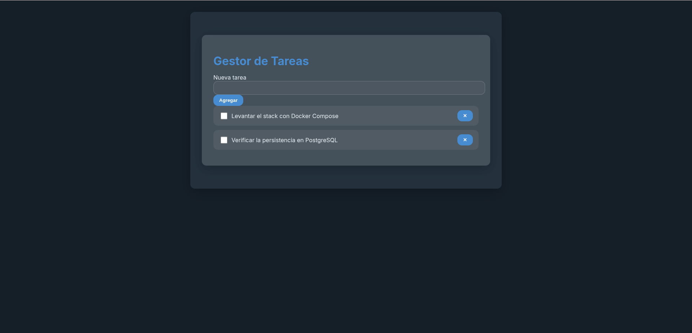
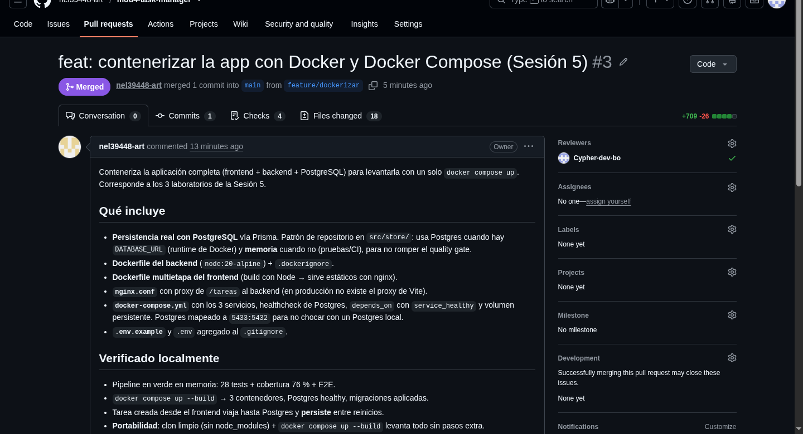

Esta sesión abre la Unidad 3. El objetivo es que la aplicación completa (frontend, backend y base de datos) se pueda levantar en cualquier máquina con un solo comando.
Para lograrlo contenericé el gestor de tareas en tres partes: un Dockerfile para el backend,
un Dockerfile de dos etapas para el frontend, y un docker-compose.yml que levanta y
conecta los tres servicios (frontend, backend y PostgreSQL).
Antes de esta sesión, la aplicación guardaba las tareas en memoria, sin base de datos. Como la
Sesión 5 pide usar PostgreSQL y que los datos se guarden de verdad, cambié el backend para que use
una base de datos. Para que las pruebas de la Sesión 4 siguieran pasando (esas corren sin base de
datos), el código decide dónde guardar según el entorno: usa PostgreSQL con Prisma cuando existe la
variable DATABASE_URL (dentro de Docker) y usa memoria cuando no existe (durante las
pruebas). Los archivos de esa parte están en src/store/.
Para el backend escribí un Dockerfile.backend a partir de
node:20-alpine, y un .dockerignore para que node_modules y
.env no entren en la imagen.
# Dockerfile.backend FROM node:20-alpine WORKDIR /app COPY package*.json ./ COPY prisma ./prisma RUN npm ci COPY . . EXPOSE 4000 CMD ["node", "src/server.js"]
Copio el package.json antes que el resto del código para aprovechar el cache de
Docker: así no reinstala las dependencias cada vez que cambio algo del código.
El frontend usa un Dockerfile.frontend de dos etapas. La primera compila la app con
Node; la segunda copia solo el resultado (la carpeta dist) a una imagen de nginx, sin
Node.
# Dockerfile.frontend # Etapa 1: construir la aplicación con Node FROM node:20-alpine AS build WORKDIR /app COPY package*.json ./ COPY prisma ./prisma RUN npm ci COPY . . RUN npm run build # Etapa 2: servir solo los estáticos con nginx (sin Node) FROM nginx:alpine COPY --from=build /app/dist /usr/share/nginx/html COPY nginx.conf /etc/nginx/conf.d/default.conf EXPOSE 80 CMD ["nginx", "-g", "daemon off;"]
El frontend llama a /tareas con fetch. En la imagen final ya no está
Vite, que en desarrollo hacía de proxy, así que configuré nginx.conf para reenviar
/tareas al backend y servir la app en las demás rutas.
# nginx.conf
location /tareas {
proxy_pass http://backend:4000; # 'backend' es el nombre del servicio, no localhost
}
location / {
try_files $uri $uri/ /index.html;
}
El docker-compose.yml levanta PostgreSQL, backend y frontend. El backend se conecta
a la base usando postgres (el nombre del servicio) como host, no localhost.
El depends_on con condition: service_healthy hace que el backend espere a
que PostgreSQL esté listo, y un volumen guarda los datos. Mapeé PostgreSQL al puerto
5433 del host porque el 5432 ya lo usa otro PostgreSQL en mi máquina.
$ docker compose up --build $ docker compose ps SERVICE STATUS PORTS backend Up 15 seconds 0.0.0.0:4000->4000/tcp frontend Up 18 seconds 0.0.0.0:5173->80/tcp postgres Up 25 seconds (healthy) 0.0.0.0:5433->5432/tcp
Con los contenedores corriendo, apliqué las migraciones de Prisma dentro del contenedor del
backend. Esto crea la tabla "Tarea" en PostgreSQL:
$ docker compose exec backend npx prisma migrate deploy
Prisma schema loaded from prisma/schema.prisma
Datasource "db": PostgreSQL database "appdb", schema "public" at "postgres:5432"
1 migration found in prisma/migrations
Applying migration `20260716001531_init`
The following migration(s) have been applied:
migrations/
└─ 20260716001531_init/
└─ migration.sql
All migrations have been successfully applied.
Abrí http://localhost:5173 y creé dos tareas. La aplicación completa funciona: el
dato pasa por el frontend (nginx), llega al backend (Express con Prisma) y se guarda en el
PostgreSQL en contenedor.

http://localhost:5173), con dos tareas guardadas en PostgreSQL.Consultando la base directamente se ve que las tareas quedaron guardadas en la tabla
"Tarea":
$ docker compose exec postgres psql -U appuser -d appdb -c 'SELECT * FROM "Tarea";' id | titulo | completada ----+-----------------------------------------+------------ 1 | Levantar el stack con Docker Compose | f 2 | Verificar la persistencia en PostgreSQL | f (2 rows)
Para comprobar la persistencia, detuve y volví a levantar los contenedores. Como el volumen
guarda los datos, las tareas siguen ahí. Solo docker compose down -v las borraría.
$ docker compose down # sin -v: conserva el volumen
$ docker compose up -d # vuelve a levantar
$ curl http://localhost:5173/tareas # los datos siguen ahí
[{"id":1,"titulo":"Levantar el stack con Docker Compose","completada":false},
{"id":2,"titulo":"Verificar la persistencia en PostgreSQL","completada":false}]
Esta es la parte central del entregable: que otra persona, con solo el repositorio y Docker,
levante el proyecto sin instalar Node, ni dependencias, ni PostgreSQL. Lo probé clonando el
repositorio en una carpeta vacía (sin node_modules) y corriendo únicamente
docker compose up --build:
# Solo el repositorio y Docker. Sin npm install ni Postgres local.
$ git clone https://github.com/nel39448-art/mod4-task-manager && cd mod4-task-manager
$ cp .env.example .env
$ docker compose up --build
backend Built
frontend Built
Container postgres-1 Started
Container postgres-1 Healthy
Container backend-1 Started
Container frontend-1 Started
$ curl http://localhost:5173/tareas
[{"id":1,"titulo":"Levantada por un companero, solo con Docker","completada":false}]
Funcionó sin pasos adicionales. Para no exponer contraseñas, guardé un archivo
.env.example con los nombres de las variables (sin valores reales) y agregué
.env al .gitignore.
Integré el trabajo a main con el mismo flujo de la Sesión 4: un Pull Request con los
cuatro checks en verde y la aprobación del revisor cruzado Cypher-dev-bo.

main, aprobado por Cypher-dev-bo y con los 4 checks en verde.Al agregar PostgreSQL, lo que más cuidé fue no romper las pruebas de la Sesión 4, que corren sin base de datos. Separar dónde se guardan las tareas según el entorno dejó que las 28 pruebas y el E2E sigan pasando y que, dentro de Docker, los datos se guarden en PostgreSQL de verdad.
La prueba de portabilidad fue clonar el repositorio en una carpeta vacía y levantarlo solo con Docker, sin instalar Node ni PostgreSQL. Funcionó, que es justo lo que se busca al contenerizar una aplicación.
Hubo dos ajustes que no estaban en la guía pero que hicieron falta en mi máquina: el proxy de
nginx para /tareas y mapear PostgreSQL al puerto 5433, porque el 5432 ya estaba
ocupado por otro PostgreSQL.
| Requisito | Estado |
|---|---|
Dockerfile del backend funcional, con .dockerignore | Cumplido |
| Dockerfile multietapa del frontend (build + nginx) | Cumplido |
docker-compose.yml con los tres servicios conectados | Cumplido |
La app funciona de punta a punta con un solo docker compose up | Cumplido (Figura 1) |
.env.example documenta las variables, sin secretos reales | Cumplido |
| El proyecto se levanta en otra máquina sin ayuda adicional | Cumplido (clon limpio) |